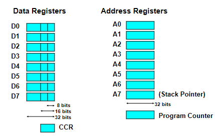

Assembly
Microprocessor Fundamentals
The CPU
- The CPU controls and performs the execution of instructions
- Does this by continuously doing fetch-decode-execute cycle
- Very complex, but two key components
- Control Unit (CU)
- Decodes the instructions and handles logistics
- Arithmetic Logic Unit (ALU)
- Does maths
- Control Unit (CU)
Fetch-Decode-Execute
- Three steps to every cycle
- Fetch instructions from memory
- Decode into operations to be performed
- Execute to change state of CPU
- Takes place over several clock cycles
The components of the CPU that are involved in the cycle:
- ALU
- CU
- Program Counter (PC)
- Tracks the memory address of the next instruction to be executed
- Instruction Register (IR)
- Contains the most recent instruction fetched
- Memory Address Register (MAR)
- Contains address of the memory location to be read/written
- Memory Data/Buffer Register (MDR/MBR)
- Contains data fetched from memory or to be written to memory
The steps of the cycle:
- Fetch
- Instruction fetched from memory location held by PC
- Fetched instruction stored in IR
- PC incremented to point to next instruction
- Decode
- Retrieved instruction decoded
- Establish opcode type
- Execute
- CU signals the necessary CPU components
- May result in changes to data registers, ALU, I/O, etc
The 68008
The 68008 is an example of a CPU. The "programmer's model" is an abstraction that represents the internals of the architecture. The internal registers as shown below are part of the programmer's model.

- Internal registers are 32 bits wide
- Internal data buses are 16 bit wide
- 8 bit external data bus
- 20 bit external address bus
- D0-D7 are 32 bit registers used to store frequently used values
- Can be long (32 bits), word (16 bits), or byte (8 bits)
- Status register (CCR) consists of 2 8-bit registers
- Various status bits are set or reset depending upon conditions arising from execution
- A0-A6 are pointer registers
- A7 is system stack pointer to hold subroutine return addresses
- Operations on addresses do not alter status register/ CCR
- Only ALU can incur changes in status
- The stack pointer is a pointer to the next free location in the system stack
- Provides temporary storage of state, return address, registers, etc during subroutine calls and interrupts
The diagram shows the internal architecture of the CPU, and how the internal registers are connected via the buses. Note how and which direction data moves in, as indicated by the arrows on the busses.

Register Transfer Language
The fetch-decode-execute cycle is best described using Register Transfer Language (RLT), a notation used to show how data moves around the internals of a processor and between registers.
- For example
[MAR] <- [PC]denotes the transfer of the contents of the program counter to the memory address register - Computer's main memory is called Main Store (MS), and the contents of memory location
Nis denoted[MS(N)] - RLT does not account for the pipelining of instructions
- Fetching an instruction in RTL:
| RLT | Meaning |
|---|---|
[MAR] <- [PC] | Move contents of PC to MAR |
[PC] <- [PC] + 1 | Increment PC |
[MBR] <- [MS([MAR])] | Read address from MAR into MBR. |
[IR] <- [MBR] - | Load instruction into I |
CU <- [IR(opcode)] | Decode the instruction |
Assembly Language
- Assembly is the lowest possible form of code
- High level code (for example C) is compiled to assembly code
- Assembly is then assembled into machine code (binary)
- Assembly instructions map 1:1 to processor operations
- Uses mnemonics for instructions, ie
MOVorADD - Languages vary, but format tends to be similar:
LABEL: OPCODE OPERAND(S) | COMMENT
An example program is shown below
ORG $4B0 | this program starts at hex 4B0
move.b #5, D0 | load D0 with number 5
add.b #$A, D0 | add 10 (0x0A) to D0
move.b D0, ANS | move contents of D0 to ANS
ANS: DS.B 1 | leave 1 byte of memory empty and name it ANS
#indicates a literal$means hexadecimal%means binary- A number without a prefix is a memory address
ANSis a symbolic nameORG(Origin) indicates where to load the program in memoryDS(Define Storage) tells the assembler where to put data
The 68008 Instruction Set
- Instructions are commands that tell the processor what to do
- 5 main kinds of instructions
- Logical
- Bitwise operations
AND,LSL(Logical Shift Left)
- Branch
- Cause the processor to jump execution to a labelled address
- Condition is specified by testing state of CCR set by previous instruction
BRA- branch unconditionallyBEQ- branch if equal
- System Control
- Logical
- Instructions are also specified with their data type,
.bfor byte,.wfor word,.lfor longmove.wmoves 2 bytes
Data Movement
- Similar to RTL
move.b D0, D1 | [D1(0:7)] <- [D0(0:7)]
move.w D0, D1 | [D1(0:15)] <- [D0(0:15)]
swap D2 | swap lower and upper words
move.l $F20, D3 | [D3(24:31)] ← [MS($F20)]
| [D3(16:23)] ← [MS($F21)]
| [D3( 8:15)] ← [MS($F22)]
| [D3( 0:7)] ← [MS($F23)]
| copied 8 bytes at a time in big endian order
Arithmetic
- Maths performed on the ALU
- The 68008, like many older processors, has no FPU, so only integer operations are supported
add.l Di, Dj | [Dj] ← [Di] + [Dj]
addx.w Di, Dj | also add in x bit from CCR
sub.b Di, Dj | [Dj] ← [Dj] - [Di]
subx.b Di, Dj | also subtract x bit from CCR
mulu.w Di, Dj | [Dj(0:31)] ← [Di(0:15)] * [Dj(0:15)]
| unsigned multiplication
muls.w Di, Dj | signed multiplication
Logical
- Perform bitwise operations on data
- Also done by ALU
- AND, OR, etc but also shifts and rotates
- Logical shift (
LSL/LSR) adds a 0 when shifting- Bit shifted out goes into C and X
- Arithmetic shift preserves sign bit (
ASL/ASR) - Normal rotate (
ROL/ROR) moves the top of the bit to the bottom bit and also puts the top bit into C and X - Rotate through X (
ROXL/ROXR) rotates the value through the X register
AND.B #$7F, D0 | [D0] <- [D0] . [0x7F]
OR.B D1, D0 | [D0] <- [D0] + [D1]
LSL D0, 2 | [D0] <- [D0] << [2]
Branch
- Cause the processor to move execution to a new pointer (jump/GOTO)
- Instruction tests the state of the CCR bits against certain condition
- Bits set by previous instructions
BRA | branch unconditionally
BCC | branch on carry clear
BEQ | branch on equal
System Control
- Certain instructions used to issue other commands to the microprocessor
Subroutines and Stacks
- Subroutines are useful for frequently used sections of code for obvious reasons
- Can jump and return from subroutines in assembly
JSR <label>- Jump to SubroutineRTS- Return from Subroutine
- When returning, need to know where to return to
- The stack is used as a LIFO data structure to store return addresses
JSRpushes the contents of the PC on the stackRTSpops the return address from the stack to the PC- Can nest subroutine calls and stack will keep track
Addressing Modes
- Addressing modes are how we tell the computer where to find the data it needs
- 5 Kinds in the 68006, and many other processors have equivalents
- Direct
- Immediate
- Absolute
- Address Register Indirect
- 5 variations
- Relative
Direct Addressing
- Probably the simplest
- The address of an operand is specified by either a data or address register
move D3, D2 | [D2] <- [D3]
move D3, A2 | [A2] <- [D3]
Immediate Addressing
- The operand forms part of the instruction (is a literal) and remains a constant
- Note the prefix
#specifying a literal and the prefix specifying the base of the number
move.b #$42, D5 | [D5] <- $42
Absolute Addressing
- Operand specifies the location in memory
- Does not allow for position-independent code: will always access the exact address given
move.l D2, $7FFF0 | [MS(7FFF0)] <- [D2]
Address Register Indirect Addressing
- Uses offsets/increments/indexing to address memory based upon the address registers
- Bad, rarely used
- Not examinable
Relative Addressing
- Specifies an offset relative to the program counter
- Can be used to write position independent code
move 16(PC), D3 | [D3] <- [MS(PC + 16)]